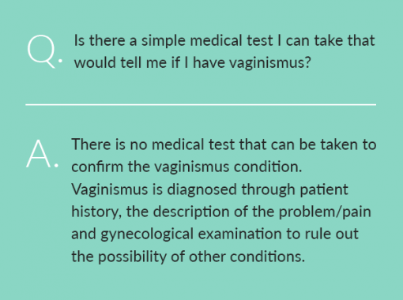
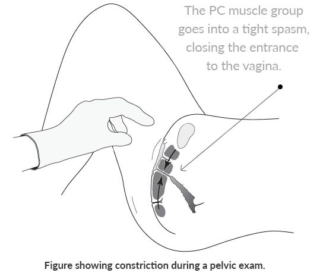

Quick Diagnosis
Strong indicators of vaginismus include any of the following (see Vaginismus Symptoms for more detailed information):
Penetration Problems
Difficult penetration or impossible intercourse / unconsummated couples. Female penetration problems and unconsummated marriages are typically due to vaginismus. Entry tightness and pain are common symptoms of vaginismus.
Medical Problems
Ongoing sexual pain after a pelvic problem, medical issue, or surgery. The experience of ongoing sexual pain or tightness after resolving or managing a pelvic medical or pain issue is typically due to vaginismus (see also dyspareunia).
No Identifiable Physical Cause
Ongoing sexual pain and tightness with no discernible physical cause. Vaginismus often occurs only during sex attempts. Physicians may initially be unable to find any problem or cause for the sexual difficulties.
Avoidance of Sex
Avoidance of sex due to pain and/or failure. When a woman states that she avoids being intimate with her husband because sex does not feel good or has become very painful, vaginismus should be strongly considered.
After Childbirth
The experience of ongoing sexual pain or tightness following childbirth (after everything has healed) is typically due to secondary vaginismus.
The Medical Diagnosis of Vaginismus
Women often suspect they have vaginismus from their symptoms, but getting medical confirmation can be challenging. Confirming a formal diagnosis of vaginismus may take some planning and perseverance. No definitive medical test exists for the diagnosis of vaginismus so it may take a number of visits to several physicians or specialists before a medical diagnosis is obtained.
When physicians are initially unable to find any specific medical problem (a common experience of vaginismus sufferers), no diagnosis or misdiagnosis is a common outcome of initial medical exams.
Women may need to strongly advocate for themselves, insisting on a full diagnosis from a knowledgeable professional to rule out any other medical condition and properly confirm the vaginismus diagnosis.
Many physicians are unfamiliar with vaginismus, so part of the process is simply finding a physician that is knowledgeable about the condition. A successful medical diagnosis of vaginismus is typically determined through patient history and description of the problem, gynecological examination and the process of ruling out the possibility of other conditions. Talking to physicians about sexual problems can be difficult. Embarrassment, shame, and anxiety are often present, making it hard to communicate and obtain appropriate care.
A medical diagnosis is helpful in removing any doubts or anxiety related to identifying the condition and enables women to have more confidence in moving toward treatment solutions. Sexual pain disorders like vaginismus are commonly misdiagnosed or left unaddressed. Women may need to be very courageous in persevering until their concerns are given due attention and a reliable medical diagnosis is reached. In some cases and locations, a solid medical diagnosis is not always available or possible. This is especially true in nations with fewer health care options.
Our mission is to help as many women as possible with this condition.
This website details important information about vaginismus and we invite all those suspecting a possible diagnosis to read through the various site topic areas such as symptoms, stories, causes, treatment, user/medical feedback and FAQs, to learn as much as they can about the condition and perhaps to shed some light onto their own situations.
Today, there are many wonderful resources to help women learn about vaginismus and treatment. The self-help books offered through our website, go into great detail about the symptoms, causes, and treatment protocols for successful vaginismus help.
Medical websites, such as those listed in our vaginismus community area, can help women find useful information about different types of pelvic pain disorders to help them sort through and understand different conditions. There are many specialists from diverse fields who can assist with the diagnosis and treatment of pelvic floor problems. Sources for vaginismus diagnostic help may also include:
- Gynecologists – A gynecologist is a medical doctor who has specialized training in diagnosing and treating female pelvic health issues. Not all gynecologists have experience with vaginismus diagnosis and treatment, but gynecologists are tremendously knowledgeable and will be able to help rule out other conditions, clarify health issues and may be a great ally in the road to restoration.
- Physical Therapists – There are growing numbers of physical therapists specializing in pelvic floor and sexual pain disorders like vaginismus. Many physical therapists will work with patients to set up home programs allowing women to work at their own pace, in privacy, and at a lower cost. The American Physical Therapy Association, Journal of Women’s Health Physical Therapy, published a recommendation for the use of our materials for all women with vaginismus, and many therapists use the materials to help guide their patients through successful home treatment.
- Sex Therapists, Psychologists, and Counselors – There are many other specialists who have varying degrees of experience with vaginismus.
Pelvic Exam as Part of Vaginismus Diagnosis
One of the most important aspects of vaginismus diagnosis is simply the thorough elimination of other possible physical or medical conditions that may be causing the symptoms—leaving the near-certain likelihood of vaginismus.
The process of elimination is a critical part of vaginismus diagnosis. The diagnostic process will typically entail giving a medical and sexual history and undergoing a pelvic or gynecological exam.
The physician will discuss the location and occurrence of pain to help render an accurate vaginismus diagnosis or may request some other tests to help rule out any other problems besides vaginismus.
Note that some women feel more comfortable expressing themselves and being examined by female health care specialists. Where this is an issue, we encourage women to seek a referral with a female specialist. Taking a proactive, systematic approach will help a person get better care and treatment outcomes.
Unique Challenges with Diagnosing Vaginismus
Burning, tightness, and difficult penetration symptoms may not be at all noticeable during the pelvic exam. For some women, these symptoms occur only during intercourse attempts. For this reason, diagnosis must involve serious consideration of the woman’s concerns which might be stated vaguely as “I’m having difficulty with sex.”
Sometimes, busy health care professionals will fail to recognize the signs of vaginismus and give standard (but unhelpful) advice to just “use more lubricant,” “try to relax more,” or “drink some wine.” This may be due to a lack of familiarity with vaginismus or reliance on outdated literature on the condition. Due to PC muscle tightness, some women with vaginismus find gynecological exams to be extremely painful and are unable to tolerate them. If a woman suspects she may have difficulty completing an exam, she should communicate this to her physician.
Instead of recognizing the vaginismus condition, a physician may falsely believe a woman's vagina is too small, when/if she is unable to complete a pelvic exam.
There are adjustments (e.g. body positioning, size of speculum used, and nurse support) that can be made to contribute to a more positive experience. A physician who is familiar with the vaginismus condition will be more suited to providing a comfortable and sensitive environment.
When there is constant vaginal tightness for the duration of the pelvic exam, it may appear to the physician as though there is an unusually small vagina or a hymen abnormality problem.
A doctor’s false belief that the vagina is too small, combined with the patient’s urgent complaint that she cannot have penetrative sex with her spouse or that sex really hurts, may further lead to the false assumption that the vagina requires corrective surgery to enlarge the opening and allow entry.
Though there may be rare exceptions, women with vaginismus typically have completely normal genitalia. The constriction of the vagina is due solely to the tight involuntary spasm of the pelvic floor muscles. Unfortunately, some physicians continue to press forward with the pelvic exam causing great discomfort and pain for the woman. This traumatic experience in itself can contribute to the vaginismus condition.
With vaginismus, the simple approach of a physician’s hand may have the effect of tightening the pelvic floor muscles and making the vaginal entrance seem very small and tight. Note that not all women with vaginismus will experience tightness during a medical exam (tightness may only occur during sex attempts).
There are many dangers in being given an improper diagnosis from an uninformed professional. Unnecessary, invasive and potentially harmful surgeries and medications have been suggested for women with vaginismus who have not been properly diagnosed. Misdiagnosis and the promotion of invasive or unhelpful surgeries are sometimes the unfortunate result of all this confusion.
There is no surgery to cure vaginismus. It is very important to seek a second opinion if surgery to "widen" the the vaginal opening has been recommended.
Surgery does not normally resolve the penetration problem, but instead may further complicate the problem. Unnecessary, invasive, and potentially harmful surgeries and medications have been suggested for women with vaginismus who have not been properly diagnosed.
Vaginismus is a highly treatable condition that does not require any invasive procedures (see Vaginismus Treatment). Many women seeking diagnosis are often simply left undiagnosed and turned away by physicians who fail to find anything physically wrong and feel there is nothing more they can do. They may not consider a diagnosis of vaginismus due to simple lack of awareness.
Sample Script: A Self-Guided History of Sexual Pain
To assist women in obtaining reliable diagnosis for their sexual pain, the following sample script includes helpful tips to prepare for a physician visit. The script provides examples related to the vaginismus condition, however, it can be easily modified to help communicate the details of any sexual or pelvic pain problem:
1. Introduce the Problem
“I have been having problems with pain during sex and hope you will be able to help me.”
2. Provide a Description of the Pain
It happens when… “my husband tries insert his penis in my vagina” or “once he is inside and starts to move, I feel burning and tighten up,” etc.
The pain is located… “at the entrance to my vagina. My vagina is like a wall; he just cannot get it in” or “after he is inside I feel burning around the penis just inside the entrance,’ etc.
The pain lasts… “as long as he keeps trying, especially if we try forcing it in. Once he stops, there is no pain.”
This has been happening since… “our honeymoon two years ago and it‘s continued to happen every time we try to have sex” (primary vaginismus) or “my hysterectomy eight months ago” (secondary vaginismus), etc.
It feels like… “burning” … “stinging” … “like he’s hitting a wall” … “tightness during/on entry,” etc.
I have tried to reduce or eliminate the pain by… “using lubricant, changing sexual positions and relaxing more.”
I am able/unable to… “insert a tampon or complete a gynecological exam.”
3. Mention Any Past Problems
Have you previously had any sexually transmitted diseases, yeast infections, bladder problems, or any pelvic pain outside of penetration?
4. Mention Any Past Sexual Abuse
5. State What You Think the Problem Is
“I think it may be vaginismus. My symptoms are similar to those outlined in an article I read. However, I have read there are other things that can cause pain during sex and would like to have them ruled out.”
Note: Inform your doctor if you have been able to previously have sexual intercourse without pain.